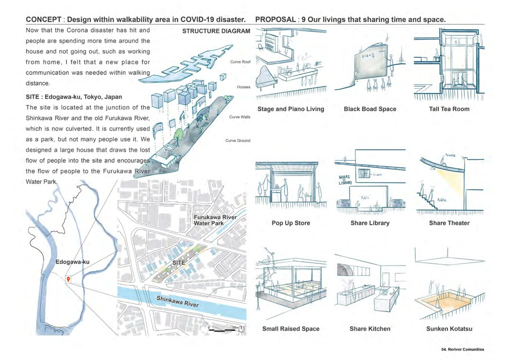
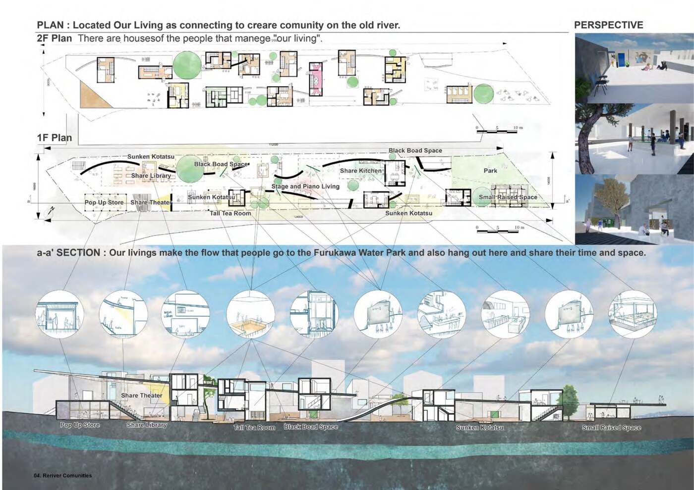

2020 · Design Studio 5 · 2 months
Reriver Communitiesながれて、たまる。
A Large House Sharing Time and Space — Edogawa-ku, Tokyo時間と空間を共有する大きな家 — 東京都江戸川区
In this assignment, we designed a "Large House" in the midst of the changing lifestyles of people in the Corona Disaster. Although the image of a house can vary, the house plays an important role in the foundation of society — this project challenges that assumption and reimagines what collective living could mean in a post-COVID world.
コロナ禍という社会的変化の中で「大きな家」を設計する課題。家のイメージは多様だが、家は社会の基盤として重要な役割を担う。アフターコロナにおける集住のあり方を根本から問い直す。
With stay-at-home restrictions came a surge in time spent locally — and with it, a new need for places of communication within walking distance. The site sits along a culverted river in Edogawa-ku. The once-flowing river has become an unused park strip. The proposal revives this latent flow as a social organizer: curved rooflines and undulating ground guide movement through the long, narrow site, drawing pedestrians in from the street and residents out from their private rooms.
コロナ禍での外出制限により自宅での時間が増え、徒歩圏内のコミュニケーション場所の必要性が高まった。敷地は江戸川区の暗渠沿いの細長い未利用地。かつての流れを空間の軸として読み替え、曲線の屋根と起伏のある地面が人の動きをやわらかく誘導する。
The ground floor opens entirely to the neighbourhood — pop-up market, share theater, share library, share kitchen, and a stage that activates the park edge. Private residences and a guest house occupy the upper floor, where curved walls create subtle territorial shifts between unit types. The section extends underground to connect with the ghost of the buried river below.
1階はポップアップマーケット・シェアシアター・シェアライブラリー・シェアキッチン・ステージが公園端を活性化。2階には住戸・ゲストハウスを置き、曲線壁が住戸タイプの間に緩やかな領域変化を生む。断面は地下まで延び、暗渠の記憶と視覚的につながる。

Concept diagrams, site plan and shared programme inventoryコンセプトダイアグラム・サイト計画・共有プログラム一覧

1F / 2F floor plans and interior perspectives1階・2階平面図と内観パース